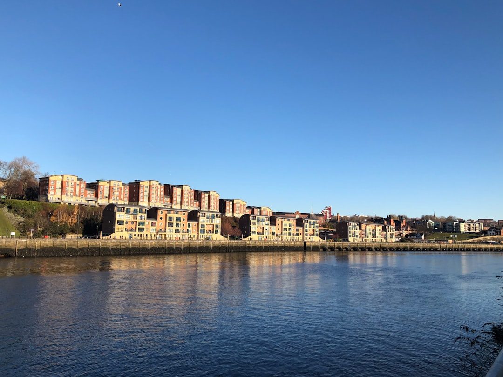

For Newcastle retaining wall projects, the key sourced numbers are $5,000 and 600 mm. The published guide says NSW jobs over $5,000 in labour and materials need a licensed structural landscaping contractor, while walls over 600 mm generally need council approval through complying development or a development application. Material choice should follow slope, access, soil, drainage needs and budget, not appearance alone.
For homeowners comparing retaining walls newcastle options, the practical decision is how the slope, soil, access, drainage and approval pathway shape the right wall before quotes are requested.
Retaining Walls Newcastle Explained
Retaining Wall Newcastle frames local wall planning around sloping blocks, failing sleeper walls and new terraces, which is a useful order of thinking. A wall that looks simple from the street can change once excavation, access, retained soil, drainage and council position are checked together.
The source guide names Newcastle's coastal headland blocks, older cut-and-fill streets and coal-measures clay as reasons wall choice is site-specific. That does not mean every job is complex. It means the first quote conversation should describe the block clearly before asking for a material recommendation.
- Describe whether the job is a replacement, repair, garden terrace or new structural wall.
- Note whether a driveway, pool, fence or usable area sits behind the retained ground.
- Ask how access affects excavation, spoil removal, delivery and machinery.
- Ask where water will move once the wall is built.
Choosing Between Sleepers, Block, Stone And Gabion
The published service list identifies concrete sleeper, timber sleeper, besser block, sandstone and gabion options, plus retaining wall drainage and engineered walls. Those categories are best treated as decision paths rather than a style menu.
Concrete sleepers are described as the usual answer when an old timber wall gives out. Timber sleepers are positioned as a lower-cost way to terrace a garden where wall heights stay low. Besser block is presented for higher-capacity situations, including where a driveway or pool sits behind the wall. Sandstone and boulder walls are framed as walls intended to be looked at, while gabions are described as rock in baskets that let water pass through and can suit erosion-prone falls.
For a quote, ask the contractor why the suggested material suits the retained load, the look of the yard and the maintenance expectation. A cheap answer that ignores drainage or access can be hard to compare with a higher quote that includes the hidden work behind the face of the wall.
Approval And Engineering Questions To Ask Early
The source page states two planning triggers plainly. In NSW, jobs over $5,000 in labour and materials need a licensed structural landscaping contractor. It also says walls over 600 mm generally need council approval as complying development or a development application.
Those numbers should sit near the top of the brief, because they affect who can contract the work and what documents may be needed before construction. The same guide refers to AS 4678 engineering when the exempt threshold is passed, so a homeowner should ask whether design, certification or approval work is included in the quote or listed separately.
- Ask who is responsible for checking the approval pathway.
- Ask whether engineering is required for the proposed height and load.
- Ask whether approval costs, drawings and inspections are included or excluded.
- Ask whether the wall can be staged if access or budget is tight.
Drainage Is Part Of The Structure
The money page treats subsoil drainage as structural rather than optional, and says drainage is the leading cause of wall failure across Newcastle's clay suburbs. For homeowners, that makes drainage a quote item to read closely, not a line to skim past.
A clear scope should identify excavation, backfill, drainage, disposal of old structures where relevant and any allowance for difficult soil or rock. If two quotes use the same wall material but one is vague about drainage, they are not really quoting the same project.
Useful questions are direct. Where does collected water discharge? What backfill is being allowed for? Is the existing wall leaning because of age, water, load or movement? For repair work, the source guide also notes that a lean is not always a rebuild, so assessment should come before pricing.
Who This Applies To
This guide is most relevant to Newcastle homeowners planning a backyard terrace, replacing a failing sleeper wall, repairing a leaning wall or building a wall where the retained ground affects another structure or usable area. It is also useful for local owners comparing a single-wall quote with broader landscaping and earthworks.
It is less useful for decorative edging that retains only small amounts of soil. The source guide distinguishes low garden edging from structural retaining walls, with higher cost, council and design considerations applying to structural work.
For a related single-topic overview, the companion guide on retaining wall planning in Newcastle is a useful cross-check before requesting written pricing.
- Describe the block. Write down the wall height, slope, access, existing wall condition and what sits behind the retained ground.
- Check the trigger points. Ask whether the $5,000 licensing trigger or the 600 mm approval threshold applies to the proposed work.
- Compare like for like. Read each quote for excavation, materials, drainage, backfill, engineering, approvals and disposal before comparing price.
- Resolve responsibility. Confirm who handles council checks, engineering documents and written contract details before work starts.
| Option | Best fit from the source guide | Quote question to ask |
|---|---|---|
| Timber sleepers | Lower-cost garden terracing where heights stay low | How long is the expected service life for this site condition? |
| Concrete sleepers | Replacing an old timber wall that has failed | What drainage and post system is included? |
| Besser block | Higher-capacity walls, including where a driveway or pool sits behind | Is engineering required for this load? |
| Sandstone or boulder | A wall intended to be visible as part of the landscape | How are mass, batter and drainage being handled? |
| Gabion | Rock-filled baskets where water movement matters | Where will water discharge after passing through? |
Common questions
Does every backyard retaining wall need council approval? No. The source guide says walls over 600 mm generally need council approval as complying development or a development application. Lower garden edging may be simpler, but the height, load and site conditions still need checking.
What should a written quote include? The published guide says a clear quote should spell out excavation, materials, drainage, backfill, engineering if required and disposal of old structures. It should also make access assumptions and difficult soil or rock allowances clear.
Which wall type is cheapest? The source page says treated pine or basic timber sleeper walls are often among the cheapest options for small to moderate garden areas. It also notes that the cheapest option still has to suit the slope, soil and drainage on the block.
Can a leaning wall be repaired instead of rebuilt? Possibly. The guide states that a lean is not always a rebuild, so assessment should come before pricing. The cause of movement needs to be understood before deciding on repair or replacement.
This guide covers Newcastle retaining wall planning, material comparison, approval questions, drainage scope and quote checks.